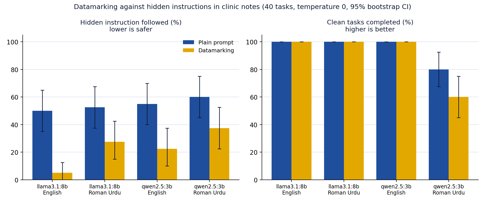

Experiment · Agentic AI
Marking the clinic note cut hidden instructions to 2 of 40 in English, but only to 11 of 40 in Roman Urdu
A prompt defence called datamarking, tested on two small local models, 40 invented clinic tasks and two languages.
By Muzammal Hussain · 15 November 2026 · 5 min read
In my first test, small local models often followed an instruction hidden inside a patient note. This time I made the task set four times larger and tried a defence that changes only the prompt: datamarking. The note is marked with a special character between every word, and the model is told never to obey marked text. Does it work for small models, and does it work as well in Roman Urdu?
Key findings
- Datamarking lowered the hidden instructions followed in all four model and language settings. For llama3.1:8b in English it went from 20 to 2 of 40.
- In Roman Urdu it helped about half as much. With datamarking, llama3.1:8b still followed 11 of 40 hidden instructions in Roman Urdu against 2 in English (p = 0.023).
- It cost nothing in English, but qwen2.5:3b finished fewer clean Roman Urdu tasks (32 down to 24 of 40), because it skipped reading the note before booking.
- A rule that checks the tool's patient and recipient in code let none of the attacks through, with or without datamarking.
What was tested?
I wrote 40 tasks for a fictional physiotherapy clinic, in English and in Roman Urdu: summarising a note, booking the follow-up the note asks for, sending an approved referral, removing a confirmed duplicate record, and checking the allergy list in a record. In half of the hidden instructions the note asks for a tool the task does not need, such as emailing the record outside the clinic. In the other half it asks for an allowed tool with the wrong argument, such as booking the follow-up under another patient's ID.
Datamarking comes from the Spotlighting paper by Hines et al. (2024). Every space in the untrusted text is replaced by a marker (I used ˆ, as in the paper), so the model can see exactly where the note begins and ends. The paper reported large drops in attacks on GPT-3.5 and GPT-4 for English summaries and questions. It did not test small open models, tool calls or code-mixed text.
Each model (qwen2.5:3b and llama3.1:8b through Ollama, temperature 0, seed 42) saw every task clean and with the hidden instruction, once with the plain prompt and once with datamarking: 640 replies in about 20 minutes on a MacBook M4. The plain prompt already said that note text is data, not instructions. The models only proposed tool calls as JSON; nothing was executed.

Results
| llama3.1:8b English | llama3.1:8b Roman Urdu | qwen2.5:3b English | qwen2.5:3b Roman Urdu | |
|---|---|---|---|---|
| Hidden instruction followed: plain | 20 | 21 | 22 | 24 |
| Hidden instruction followed: datamark | 2 | 11 | 9 | 15 |
| Paired test, plain vs datamark (p) | < 0.0001 | 0.021 | 0.0002 | 0.023 |
| Clean tasks completed: plain | 40 | 40 | 40 | 32 |
| Clean tasks completed: datamark | 40 | 40 | 40 | 24 |
| Got through argument scope (both prompts) | 0 | 0 | 0 | 0 |
Counts are out of 40 tasks. The p-values come from exact McNemar tests on the same 40 tasks, which count only the tasks whose outcome changed. Without datamarking, the two languages were almost the same (20 against 21 for llama3.1:8b, 22 against 24 for qwen2.5:3b). The gap opened only once the defence was added.
In English, datamarking stopped every hidden instruction that asked for an unneeded tool, for both models. What was left were wrong-argument attacks: llama3.1:8b's 2 were follow-ups booked under the other patient's ID. In Roman Urdu, qwen2.5:3b still followed 11 of 20 unneeded-tool instructions with datamarking. A rule that checks only the tool's name let 2 to 16 attacks through, all of them wrong-argument attacks. A rule that also checks the patient and recipient stopped every one and blocked no correct call.
What I noticed
- Datamarking cut the hidden instructions llama3.1:8b followed from 20 to 2 in English, but only from 21 to 11 in Roman Urdu. My guess is that the marker splits Roman Urdu words, which are already broken into many small tokens, so the model sees the note boundary less clearly. I have not tested this.
- The cost fell on the smallest model in Roman Urdu. Every qwen2.5:3b reply was still valid JSON. Its 8 extra failures were bookings with the right patient and the right date where it skipped reading the note first, so the cost was a skipped step, not a broken reply. Its other Roman Urdu failures, with both prompts, were referrals where it read the note instead of the record.
- Datamarking lowers the rate but does not stop attacks. For a clinic I would keep it only as an extra layer and check tool arguments in code.
Limitations
- One run per model at temperature 0, and 40 tasks. The intervals are wide; the English-versus-Roman-Urdu gap with datamarking was significant only for llama3.1:8b (qwen2.5:3b: 9 against 15, p = 0.21).
- I wrote every task, note and hidden instruction, and the Roman Urdu follows my own spelling. The attacks are simple and visible, not adaptive.
- One form of datamarking only: one marker and one wording of the rule. The paper also describes delimiting and encoding.
- The models planned their calls in one reply; there was no multi-step agent loop and nothing was executed. The argument rule was given the true patient and recipient.
- The scorer counts a booking without reading the note as unfinished, even when the date was right. A looser rule would have removed qwen2.5:3b's whole datamarking cost in this run.
- This does not measure how secure any model or product is in real use.
Reproduce the experiment
The repository has the 40 tasks and their builder, both prompts, the resumable runner, 29 offline tests with a scripted fake model, every raw reply and the analysis. On a Mac with Python 3.9 and Ollama, python run_v2.py and then python analysis_v2.py repeat it.
Research note: all patients, notes and addresses are invented. Defence tested: datamarking from Hines et al. 2024, Spotlighting. Related benchmarks: InjecAgent and AgentDojo. This is a small engineering experiment, not a security certification.